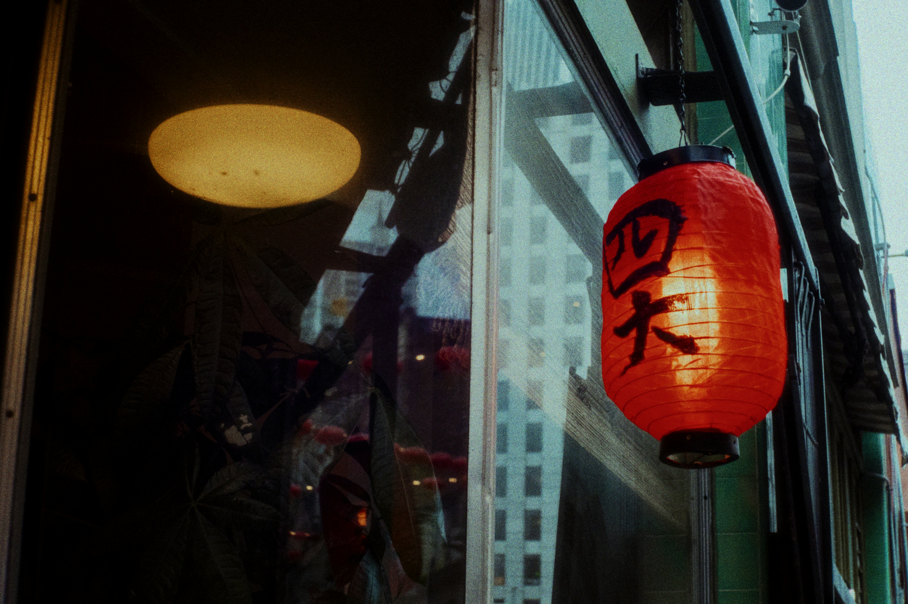

In 1949, four Chinese immigrant women form the Joy Luck Club in San Francisco, sharing memories of their lives in China and hopes for their daughters’ futures. Their American-born daughters struggle to understand their mothers’ traditions and expectations. As they face challenges of their own, they gradually discover the stories, sacrifices, and cultural heritage they have inherited from their mothers.
Explore how Chinese traditions and American values influence the characters’ identities, beliefs, and relationships. The novel shows the challenges of balancing cultural heritage with life in a different society.
Discover how different generations can see family, success, love, and independence in very different ways. The story highlights how these differences can create misunderstandings while also bringing families closer together.
Discover how memories and stories from the mothers’ past help their daughters understand their families and themselves. The past becomes a bridge between two generations and reveals experiences that were once difficult to understand.

‘A Brilliant first novel, The Joy Luck Club is the story
of four mothers and their first-generation Chinese-American
daughters; two generations of women struggling to come to
terms with their cultural identity. Tan writes from the
heart, cutting sharp edges with wit, wisdom and a gentle
and delicate precision. Completely compelling’
-Time Out-
‘Pure enchantment’
-Mail on Sunday-
‘She is both a consummate storyteller and a writer whose
prose manages to be emotionally charged without a trace
of sentimentality’
-Sunday Times-
Amy Tan was born in Oakland, California, in 1952, two and a half years after her parents emigrated to the U.S. Though her parents hoped she would become a neurosurgeon by trade and a concert pianist by hobby, instead she became an administrator of programmers for disabled children and later a reporter and editor.
She visited China for the first time in 1987 and found it was just how her mother had said: ‘As soon as my feet touched China, I became Chinese.’
Amy Tan lives in San Francisco with her husband, The Joy Luck Club is her first novel.
To my mother and the memory of her mother
You asked me once what I would remember
This, and much more